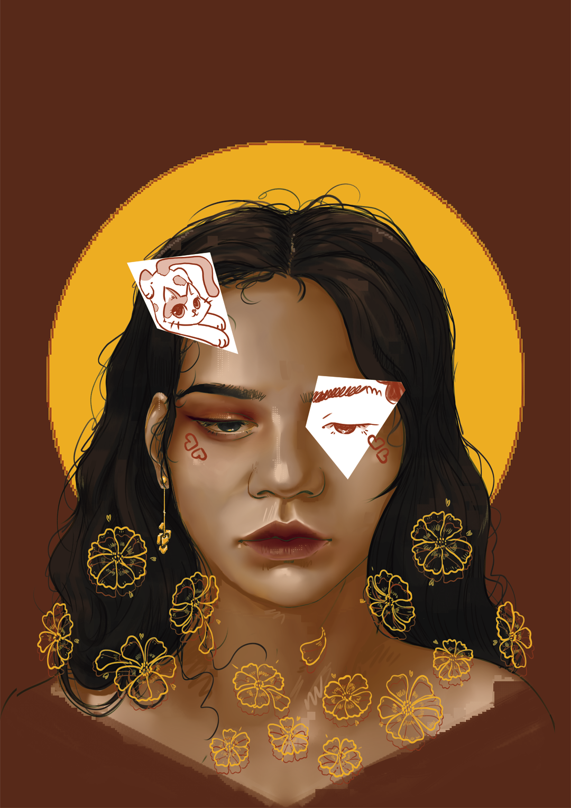
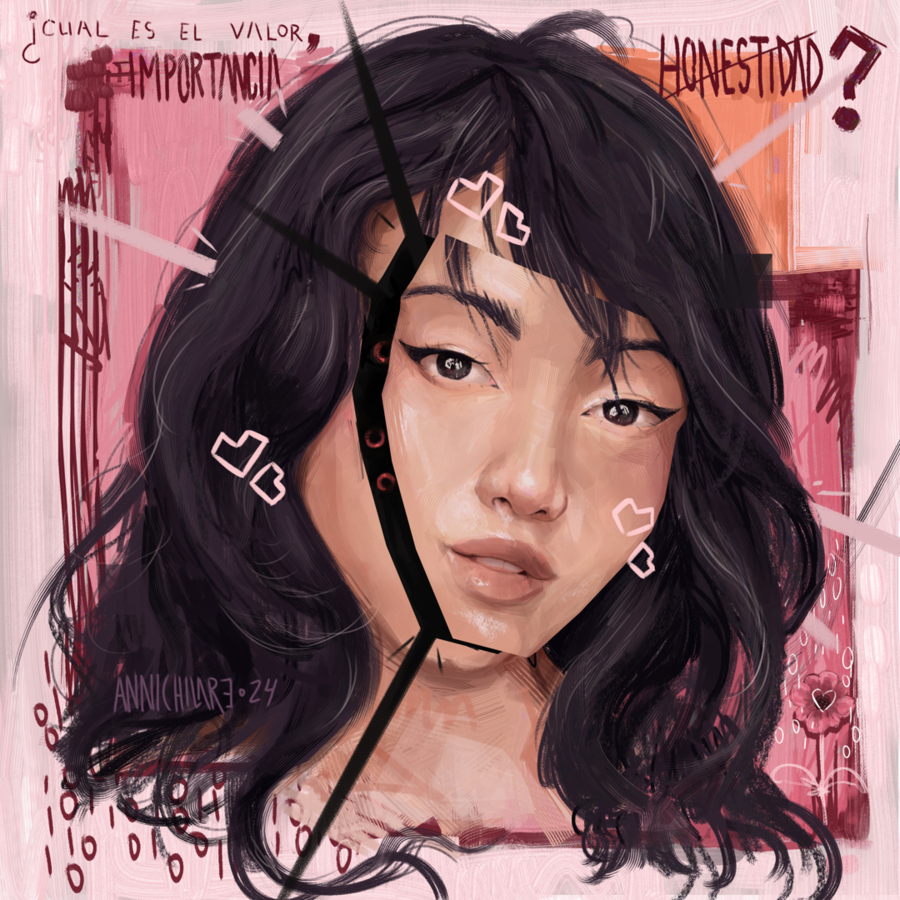
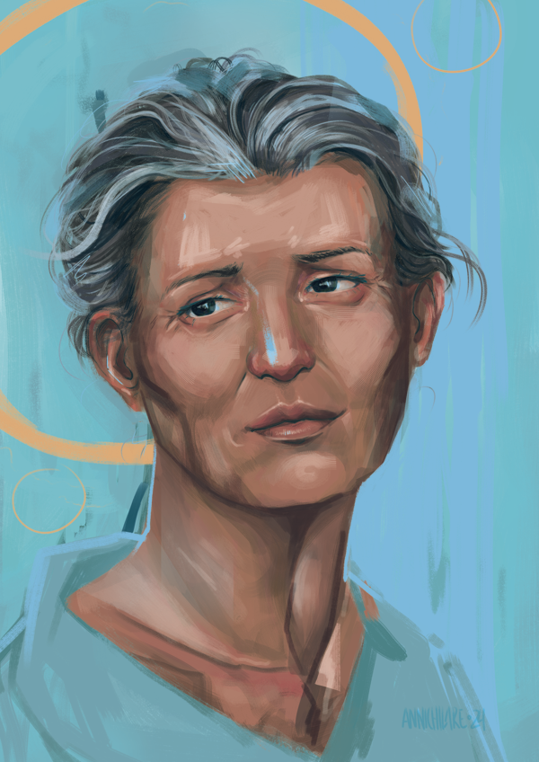
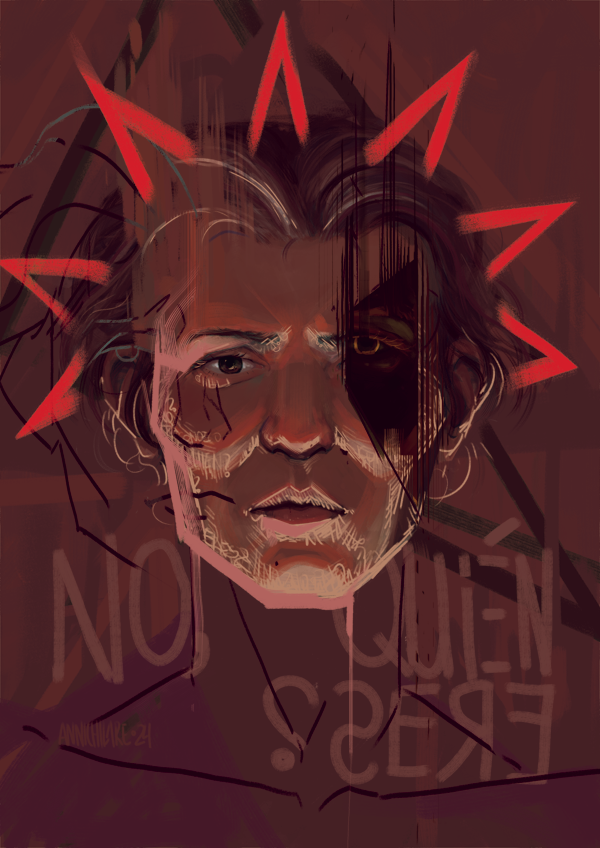
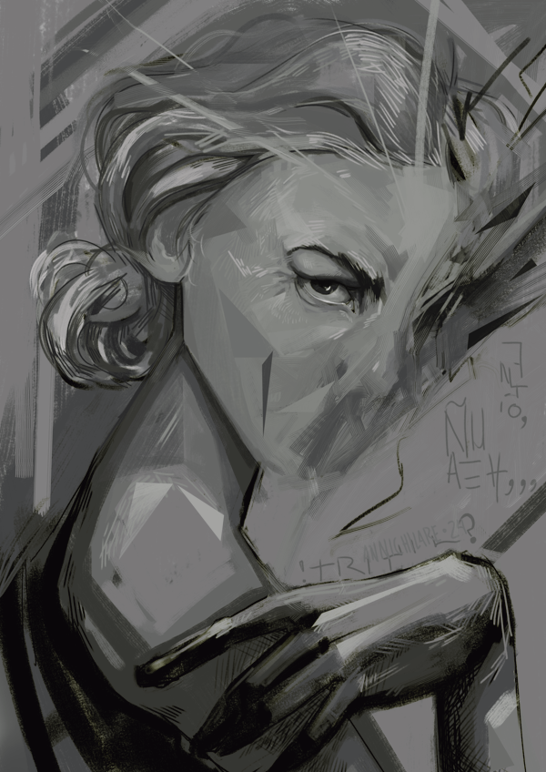
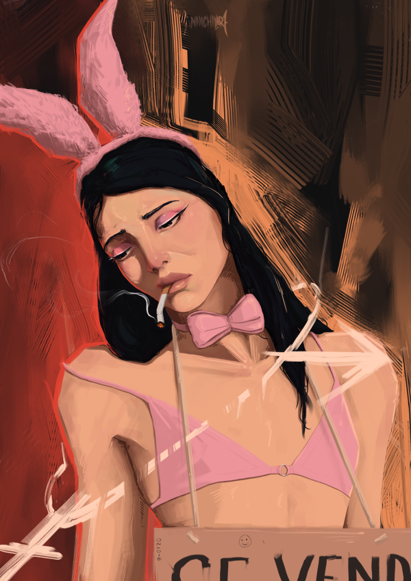
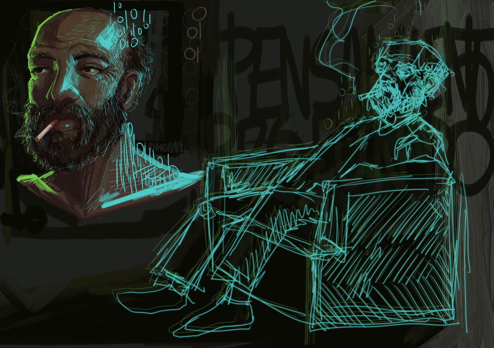
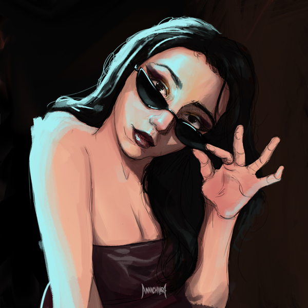
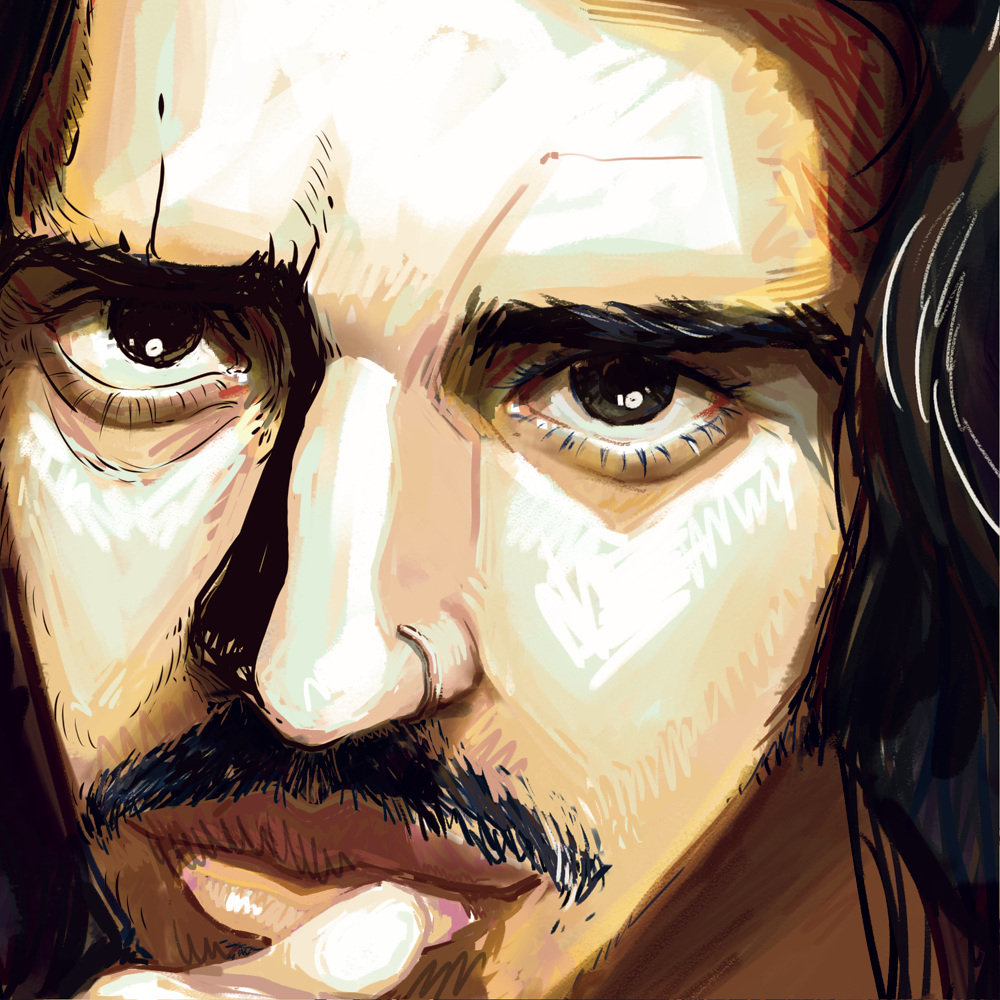

Galería











Rasec Depablos · Artista plástico · Figurativo y abstracto

Mi trabajo artístico se centra en representar los estados mentales humanos, explorando las complejidades y ambigüedades de nuestra mente a través de una fusión entre lo figurativo y lo abstracto. Utilizo las técnicas que estén a mi alcance y con las que me sienta cómodo para transmitir mi mensaje, tanto en tradicional como en arte digital.
Cada obra surge de un proceso introspectivo, a menudo largo, donde intento capturar la esencia de lo intangible, haciendo tangible lo que solo puede percibirse pensando y analizando nuestros comportamientos. A través de mis obras invito al espectador a reflexionar sobre su propia relación con sus pensamientos y emociones.







